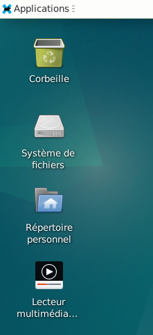
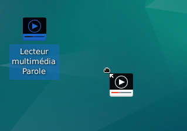

&
Ajout de raccourcis d'une application sur le bureau : Le site Xfce.
Sur le bureau se trouve des icônes (raccourcis).
Ils permettent de lancer directement les applications depuis le bureau.
On peut en rajouter ou en supprimer.




Nota : Pour supprimer un raccourci, se rendre au chapitre : Suppression de raccourcis sur le bureau.

Informations sur le logiciel libre et Merci.
Marques déposées :
Ce site ne fait pas partie de Debian, n'est pas produit par le projet
Debian, ni approuvé par le projet Debian.
Ce site n'est pas affilié à Debian. Debian est une marque déposée appartenant
à Software in the Public Interest, Inc.
Contribuer :
Ce site ne fait pas partie de XFCE, n'est pas produit par le projet
XFCE, ni approuvé par le projet XFCE.
Ce site n'est pas affilié à XFCE.
Ce site est juste réalisé par un passionné.